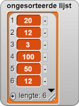
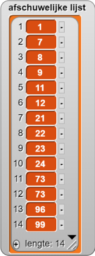
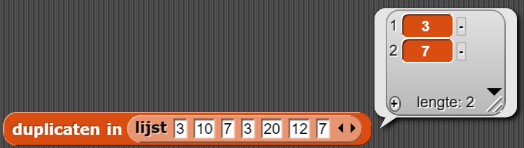

Lijst-Verwerkingsalgoritmes
On this page, test je of de elementen van een lijst verschillend zijn (dus dat
er geen duplicaten zijn).

Stel dat je een lijst met items hebt en wilt weten of de elementen van de lijst verschillend zijn (uniek). Dit soort vragen komen vaak voor: een webzoekmachine wil bijvoorbeeld zeker weten dat alle zoekresultaten van elkaar verschillen./p>
Hier is één algoritme om het probleem op te lossen:
Algoritmen kunnen worden uitgedrukt in natuurlijke taal of in pseudocode, tekst die de
stappen beschrijft die een programma kan uitvoeren. Deze talen voor menselijk begrip kunnen helpen
bij het schrijven van het algoritme in een programmeertaal.
- Stap 1. Vergelijk het eerste item van de lijst met elk van de latere items in
de lijst (het tweede item, het item, enz.). Als je het eerste item opnieuw ziet, meld je dat de
cijfers niet verschillend zijn (
onwaar). - Stap 2. Als je stap 1 voltooid hebt zonder te stoppen, vergelijk je het tweede
item met elk van de latere items (de derde, de, enz.). Als u het tweede item opnieuw ziet, meld
je dat de cijfers niet verschillend zijn (
onwaar). - Stap 3. Herhaal stap 2 voor elk nummer in de lijst. Vergelijk dat item met elk van de latere items in de lijst.
- Stap 4. Als je stap 3 voltooid hebt zonder duplicaten te vinden, rapporteer dan
dat de items verschillend zijn (
waar).
- Bouw een predicaat dat het bovenstaande algoritme implementeert.
  Als
je de lengte van de lijst zou verdubbelen, zou dit algoritme dan evenveel tijd kosten? Twee keer
zo lang? Meer dan twee keer zo lang?
Als
je de lengte van de lijst zou verdubbelen, zou dit algoritme dan evenveel tijd kosten? Twee keer
zo lang? Meer dan twee keer zo lang?
Alex: Ons predikaat vertelt ons of de elementen van een lijst verschillend zijn. Ik
wil meer.
Yasmine: Wat wil je dan?
Alex: Als er duplicaten in de lijst staan, wil ik graag zien wat ze zijn. Op die
manier kan ik ze verwijderen.
Bo: Ok, laten we een verslaggever schrijven die de lijst met duplicaten in een lijst
produceert.
- Bouw een rapporteur die alle dubbele items in een lijst geeft: 
- Bouw een rapporteur,
verwijder duplicaten, die een lijst als invoer gebruiken en rapporteert een nieuwe lijst met dezelfde elementen als de invoerlijst maar zonder dubbele elementen.